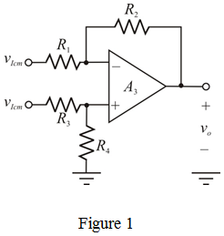

Step 1:
Refer to instrumentation amplifier in Figure 2.20 (b) in the textbook.
Write the expression for differential gain of the instrumentation amplifier.
Substitute  for ,
for ,  for
for  ,
,  for , and
for , and  for in the equation.
for in the equation.
Therefore, the differential gain,  of the instrumentation amplifier is .
of the instrumentation amplifier is .
Step 2:
From the circuit shown in Figure 2.20 (b) in the textbook, equal voltage appears at the both negative input terminals of op-amp  and op-amp
and op-amp  , causing common-mode output voltage equal to zero.
, causing common-mode output voltage equal to zero.
Therefore, the common-mode gain,  of the instrumentation amplifier is .
of the instrumentation amplifier is .
Step 3:
Write the expression for the common-mode-rejection-ratio (CMRR).
Substitute for  and for
and for  in the equation.
in the equation.
Therefore, the common-mode-rejection-ratio (CMRR) is  .
.
Step 4:
Now, reduce resistor values  and
and  by
by  and increase resistor values and
and increase resistor values and  by
by  .
.
The resistor values are,
Calculate the differential gain of the instrumentation amplifier.
Therefore, the differential gain,  of the instrumentation amplifier is .
of the instrumentation amplifier is .
Step 5:
Consider the second state amplifier, the circuit is shown in Figure 1.

Step 6:
Write the general common-mode gain formula.
 …… (1)
…… (1)
Assume all resistors be .
The range of is.
Similarly, the range of is .
Step 7:
To obtain maximum common mode gain, select the minimum values of .
Recall equation (1).
Substitute for and in the equation.
Therefore, the worst case common-mode gain, is .
Step 8:
Calculate the worst-case common-mode gain for .
Therefore, the worst-case common-mode gain is .
Step 9:
Calculate the common-mode-rejection-ratio.
Substitute  for
for  , and for
, and for  in the equation.
in the equation.
Therefore, the common-mode-rejection-ratio, CMRR is .
Step 10:
The value of resistor,  is reduced to
is reduced to  .
.
Calculate the differential gain of the instrumentation amplifier.
Substitute  for , for
for , for  ,
,  for , and
for , and  for in the equation.
for in the equation.
Therefore, the differential gain, of the instrumentation amplifier is .
Step 11:
When, the value of resistor,

is reduced, the common-mode gain is same. That is,
Therefore, the common-mode gain,  is .
is .
Calculate the common-mode-rejection-ratio.

Substitute  for
for  , and for
, and for  in the equation.
in the equation.
Therefore, the common-mode-rejection-ratio, CMRR is .
Therefore, for high differential gain in the stage 1, high CMRR is achieved.